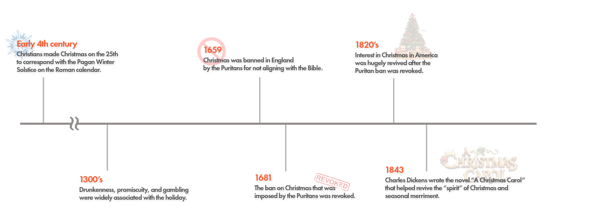
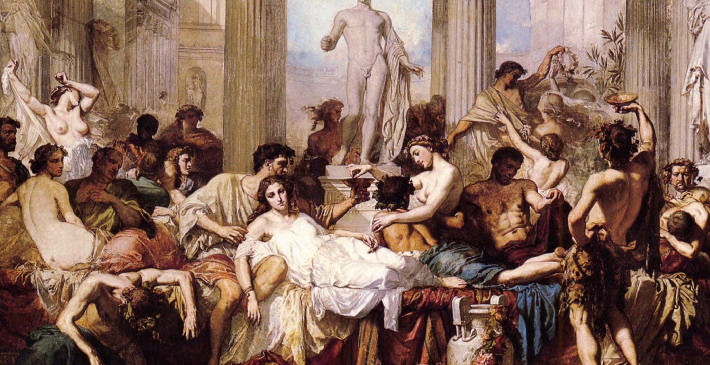
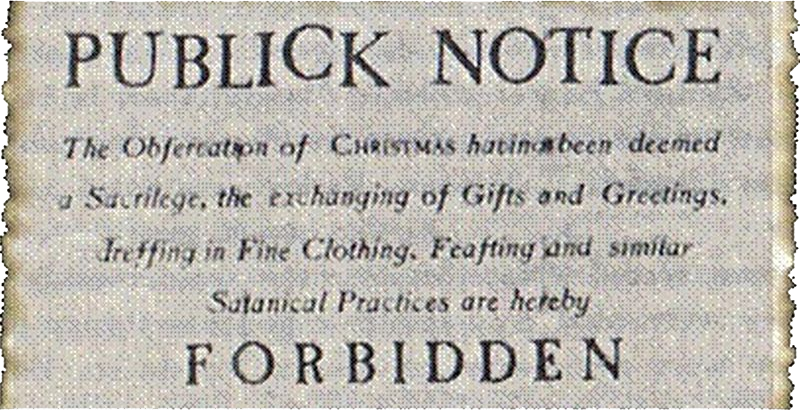

📚 Christmas: A Story of Acculturation
Christmas- a time of family gift giving and merrymaking. We all know and celebrate this
holiday. But what cultural interactions had to happen to create this holiday? Who assimilated? Who
acculturated? What elements were adopted?
Here's a short visual history of the various cultural events throughout Christmas' history:

Above is a timeline I created - click on it to view it at full size.
Early cultures were heavily dependant on seasons. Because of this, the Winter
Solstice was one of the most important events of the year in the early centuries.
Many important celebrations fell around this time. The holiday of Christmas continued this, falling on the
25th day of December.
🎄 Why does Christmas fall on the 25th?
The date of the 25th is adopted from ancient pagan Roman culture. 'Saturnalia', a massively important holiday during
the Winter Solstice, took place in December as well. Because of this, it was fitting to make
Christmas during this time since people were already celebrating.

An image depicting Saturnalia (courtesy of Radix Journal)
📎 It is believed by Christians that Jesus is the light of the world- Christians thought the Winter Solstice was the best time to celebrate his birth because it has some of the longest days of the year (the most light).
🧩 Which cultures are interacting?
In the beginning, Christians (dominant) and Romans (subculture) were
interacting. The Christians acculturated into the Roman tradition of having holidays during major seasons (like the Winter Solstice), which is an important
interaction in the history of Christmas. Christmas is a holiday that has been massively altered by a large amount of
different cultures. I am going to be focusing on the initial interactions in this paragraph,
with later paragraphs detailing the rest of the interactions.

Notice how Christmas celebrations are referred to as "Satanical Practices."
Puritans did not like the idea of Christmas. They believed that all practices that are not
strictly rooted within the Bible should be eliminated, and Christmas did not fit their guidelines.
As a result, the Puritans did not like the idea of
Christmas. Christmas was often associated with
feasting, drinking, games, and merriment. This, the Puritans felt, was a distraction from religious
discipline. In 1659, the Puritans banned England in Christmas.
Puritans tried to assimilate Christians into their own cultural beliefs by banning the celebration of Christmas for many years in history.
📉 Puritanism falls out of favor.
Puritanism began to fall out of favor, and by 1840, Christmas began a universally accepted
holiday throughout the US.
Christmas was officially declared as a National Holiday in 1870. 🎈
✨ What elements were adopted?
As I mentioned earlier, the time during which Christmas occurs was adopted by Christians from the ancient pagan Roman culture.
Because of other celebrations that were ongoing at the time, Christians acculturated and added their holiday to the list of those occurring during the Winter Solstice.
🌠 Assimilation or Acculturation?
This is definitely an example of acculturation. Christmas was heavily influenced by other cultures and even took on features of other cultures, such as the date of the holiday. However, I also feel that this could be an example of assimilation since the Puritans tried to assimilate the Christians into not participating in the holiday due to their religious beliefs.
Overall, Christmas was heavily influenced by other cultures and even took on features of other cultures, such
as the date of the holiday.
Later in history, as Christmas became a more modernized holiday, it lost a lot of it's religious meaning and became a more universal celebration. Various cultures contributed
their ideas into holiday, while also changing the dominant Christian culture. Here are some of the various contributions that changed Christmas:
- England in the 18th century - Gift giving to family members was adopted.
- Dutch in the 1821 - Created the name for Santa Claus (known as just Saint Nicholas beforehand), originating from the word 'Sinterklaas'.
- England in the 1843 - Produced the first Christmas card.
- America in the 1870's - Popularized Christmas trees, making them a common feature of the average American household.
- England in the 1950's - Christmas trees became accessible to everyone in England.
{kind=link}